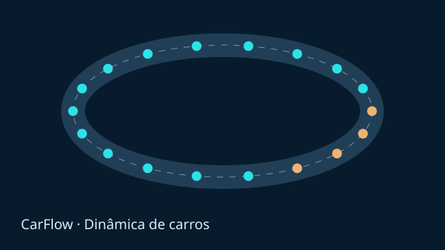

CarFlow · Dinâmica de carros
Microssimulação de carros, frenagem e ondas de congestionamento com IDM.

Estudo independente com dados sintéticos. Não representa experiência profissional, entrega a cliente ou desempenho em produção.
Resumo do projeto
Objetivo e valor
Explorar como densidade, velocidade desejada e frenagem alteram o fluxo e as distâncias entre carros.
Como funciona
Modelo Intelligent Driver Model em anel de 1,2 km: cada carro ajusta aceleração segundo velocidade, distância livre e velocidade relativa do líder. Integração de 0,1 s e checagem explícita de sobreposição.
Experimentos e validação
Três densidades, conservação da quantidade de veículos, distâncias positivas e comparação do efeito da densidade na velocidade média. A implementação JavaScript usa as mesmas equações e unidades do Python.
Limites atuais
Anel de faixa única e parâmetros ilustrativos. Sem cruzamentos, troca de faixa, sensores reais ou calibração empírica. Fluxo calculado como densidade × velocidade média; não é contagem de detector.
Explore o simulador
Calcule rotas e tráfego no navegador ou explore execuções Python de frotas. As métricas abaixo pertencem ao cenário selecionado.
Loading…
Reproduza o experimento
Extraia source.zip. Requer Python 3.10 ou superior; apenas biblioteca padrão.
python carflow.py --output report.json
python -m unittest discover -vAbra README.md para conhecer parâmetros, unidades, hipóteses e protocolo de avaliação.
Evolução de pesquisa
Calibrar IDM com trajetórias observadas, incluir semáforos e validar com métricas espaciais e temporais em rede urbana.
Referências de implementação
Relatório de execução Python
O relatório é gerado pelo código publicado. As animações de frota usam a seed 7; os indicadores agregam três seeds. Não há benchmark com dados reais.
Inspecionar resultados e limites
Loading…